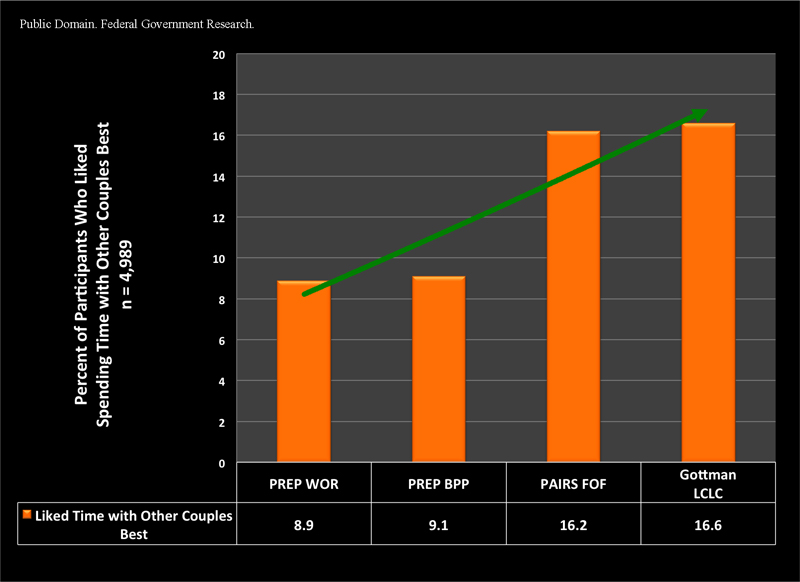
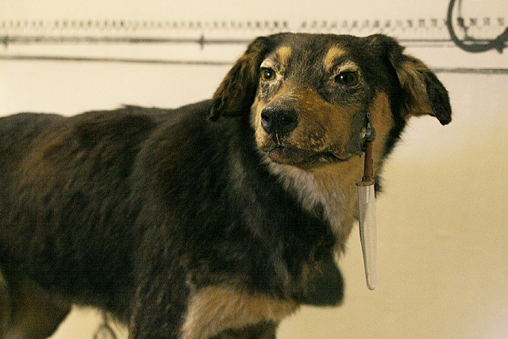
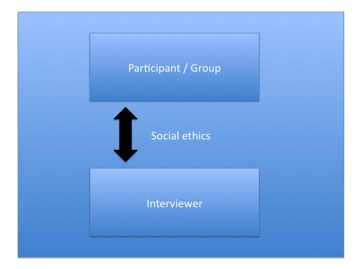

Psychological Research
How do we know what we think we know about the mind? Not from intuition, tradition, or the confident opinion of the loudest person in the room — those have a poor track record. Psychology earns the word science because it tests its ideas against evidence, gathered by methods designed to catch our own errors. This chapter shows you how psychologists ask answerable questions, how they describe behavior, how they measure the relationships between things, and how they run experiments that can actually reveal a cause. It also explains the ethical rules that protect the people — and animals — who make that knowledge possible.
By the end of this chapter you can
- Explain why psychology relies on the scientific method and describe the scientific attitude.
- Distinguish a theory from a hypothesis, and explain why claims must be falsifiable.
- Define an operational definition and explain why replication matters.
- Compare the three descriptive methods — case study, naturalistic observation, and survey — with their strengths and limits.
- Interpret a correlation coefficient and a scatterplot, and explain why correlation does not prove causation.
- Identify the independent and dependent variables, the control and experimental groups, random assignment, and the role of a placebo.
- Summarize the ethical safeguards for research: informed consent, the IRB, deception and debriefing, and humane animal care.
Section 1The scientific method

Why psychology needs a method
Everyone is an amateur psychologist. We explain why a friend snapped, predict how a crowd will behave, and feel certain we understand ourselves. The trouble is that this everyday confidence is wrong often enough to be dangerous. Hindsight bias — the "I-knew-it-all-along" feeling — makes any outcome seem obvious after it happens, so common sense can "explain" a result and its opposite equally well. We also notice evidence that fits our beliefs and overlook the rest. The scientific method exists precisely because human judgment is systematically fallible: it is a set of habits for asking questions in a way that lets the world, rather than our preferences, decide the answer.
At the heart of the method is the scientific attitude — a blend of curiosity (a genuine eagerness to find out), skepticism (not accepting a claim until the evidence is in), and humility (a willingness to be shown wrong). Psychology became a distinct science in 1879, when Wilhelm Wundt opened the first psychology laboratory in Leipzig and began measuring mental processes rather than merely speculating about them. That shift — from armchair opinion to controlled observation — is what this whole chapter is about.
Theory versus hypothesis
These two words are often swapped in casual speech, but in science they mean very different things. A theory is an explanation that organizes many observations and predicts new ones — a big, integrated idea, well supported by evidence. A hypothesis is a specific, testable prediction that a theory (or a hunch) generates — a single claim you can actually go out and check. A theory of stress, for example, might predict the hypothesis that "students who sleep fewer than six hours before an exam will score lower than those who sleep eight." The hypothesis is what you test; the theory is what the accumulated results support or undermine.
A scientific claim must be falsifiable — stated clearly enough that some possible result could prove it wrong. "People behave the way they do because of unconscious forces we cannot observe" explains everything and therefore predicts nothing; it cannot be tested and so is not scientific. A good hypothesis sticks its neck out, naming in advance what would count as failure.
| Theory | Hypothesis | |
|---|---|---|
| What it is | A broad explanation that ties many findings together | A single, specific, testable prediction |
| Scope | Wide — covers many situations | Narrow — one situation, one prediction |
| Example | Sleep consolidates memory | Students who sleep 8 hrs recall more word-pairs than those who sleep 4 hrs |
| Tested by | The weight of many studies over time | A single well-designed study |
Operational definitions and replication
Before you can test "sleep improves memory," you must say exactly what you mean by sleep and memory. An operational definition states a variable in terms of the precise procedure used to measure or manipulate it: "sleep" becomes "hours of sleep reported in a diary," and "memory" becomes "number of word-pairs correctly recalled after 24 hours." Operational definitions do two jobs at once: they force you to be concrete, and they let anyone else run your exact study. That is the point of replication — repeating a study, ideally with different participants and settings, to see whether the finding holds. A result that appears once may be a fluke; a result that replicates is one you can begin to trust. When many psychology findings failed to replicate in the 2010s (the "replication crisis"), the field responded by tightening its methods — a working example of the scientific attitude correcting itself.
- The scientific method exists because everyday intuition — distorted by hindsight bias — is unreliable.
- The scientific attitude = curiosity + skepticism + humility.
- A theory is a broad explanation; a hypothesis is a specific testable prediction; both must be falsifiable.
- Operational definitions make variables measurable and repeatable, enabling replication.
Section 2Descriptive research

When you want to describe, not explain
Sometimes the goal is not to find a cause but simply to describe what people are like or what they do. Descriptive research paints an accurate picture of behavior, and it comes in three main forms — the case study, naturalistic observation, and the survey. None of them can tell you why behavior happens, but each captures something the tidier methods miss.
Case studies and naturalistic observation
A case study examines one individual (or a small group) in exhaustive depth. The classic example is Phineas Gage, a railroad foreman who in 1848 survived a three-foot iron rod blasting through his frontal lobe — and whose subsequent personality change offered the first vivid clue that the frontal lobes govern judgment and self-control. Case studies are irreplaceable for rare conditions and for generating hypotheses, but they carry a built-in danger: a single person may be unusual, so what is true of them may not generalize to anyone else.
Naturalistic observation watches behavior as it unfolds in its real setting, without interference — children on a playground, drivers at an intersection, shoppers in a store. Its strength is realism: you see what people actually do, not what they say they would do. Its limits are that you cannot control anything, and the mere presence of an observer can change behavior (people act differently when watched, an effect first noticed in the famous Hawthorne factory studies). Careful researchers guard against observer bias by defining behaviors in advance and, where possible, staying unobtrusive.
Surveys and sampling
A survey asks many people the same questions, gathering a lot of data quickly and cheaply — the only practical way to study attitudes, habits, or opinions across a large group. But a survey is only as good as its sample. The whole group you care about is the population; the smaller group you actually question is the sample. To let the sample speak for the population, you need a random sample, in which every member of the population has an equal chance of being chosen. Skip that, and you get bias: a poll of only your friends, or only people who chose to answer, will mislead you. Surveys are also vulnerable to the wording of questions and to social desirability bias — people shading answers to look good.
| Method | What it does | Strength | Main limit |
|---|---|---|---|
| Case study | Studies one person/group in depth | Rich detail; great for rare cases & new hypotheses | May not generalize; one atypical case |
| Naturalistic observation | Watches behavior in its real setting | High realism; behavior is genuine | No control; observer can alter behavior |
| Survey | Questions many people | Large samples fast & cheap | Sampling & wording bias; self-report distortion |
- Descriptive research describes behavior but cannot establish cause.
- A case study gives depth on one person (e.g., Phineas Gage) but may not generalize.
- Naturalistic observation is realistic but uncontrolled and can be altered by the observer.
- A survey needs a random sample of the population to avoid bias.
Section 3Correlation

The correlation coefficient
Often we cannot manipulate the thing we want to study — we cannot randomly assign people to be wealthy, or lonely, or left-handed — but we can still measure whether two things move together. Correlation measures the strength and direction of the relationship between two variables, and it is summarized by the correlation coefficient, written r, a number that runs from −1.0 to +1.0. The sign tells you the direction: a positive correlation means the two rise and fall together (more study hours, higher grades); a negative correlation means one rises as the other falls (more absences, lower grades). The size — how close the number is to 1 in either direction — tells you the strength. An r of +0.85 is a strong relationship; an r near 0 means the two are essentially unrelated. Crucially, −0.70 is a stronger relationship than +0.30: it is the distance from zero, not the sign, that measures strength.
Reading a scatterplot
A scatterplot shows the raw relationship as a cloud of dots, one dot per person, with one variable on each axis. When the dots trend upward from left to right, the correlation is positive; when they trend downward, it is negative. The tighter the dots cluster around a straight line, the stronger the correlation and the closer r is to ±1; a shapeless blob of dots means no relationship. A scatterplot is worth drawing before you trust a coefficient, because it can reveal a strong curved pattern that r — which only measures straight-line relationships — would report as near zero.
Why correlation is not causation
Here is the single most important idea in this chapter: a correlation, no matter how strong, cannot prove that one variable causes the other. When two things travel together, three explanations remain open. First, A might cause B. Second, B might cause A (the directionality problem). Third — and most often overlooked — some unmeasured third variable (a confound) might cause both. Ice-cream sales and drowning deaths are strongly correlated, but ice cream does not drown anyone; hot summer weather independently raises both. Self-esteem correlates with success, but which causes which — or does a supportive home life boost both? Whenever you meet a correlation dressed up as a cause in a headline, ask yourself: could it run the other way, and could a third variable be pulling the strings?
| Coefficient | Direction | Meaning | Everyday example |
|---|---|---|---|
| r = +0.90 | Positive, strong | Rise together, tightly | Height and shoe size |
| r = +0.30 | Positive, weak | Loosely rise together | Study time and final grade |
| r = 0.00 | None | No linear relationship | Shoe size and IQ |
| r = −0.80 | Negative, strong | One up, other down | Class absences and grade |
- The correlation coefficient (r) runs from −1 to +1; sign = direction, distance from 0 = strength.
- A scatterplot displays the relationship as dots; tighter clustering means a stronger correlation.
- Correlation does not prove causation: watch for reverse direction and a third variable (confound).
- Only an experiment can establish cause.
Section 4The experiment

Independent and dependent variables
The experiment is the only method that can reveal cause and effect, because the researcher actively manipulates one thing and holds everything else steady to see what changes. The factor the experimenter deliberately changes is the independent variable (IV) — the presumed cause. The behavior that is then measured is the dependent variable (DV) — the presumed effect, so named because it may depend on the IV. To test whether caffeine improves reaction time, caffeine dose is the IV (the thing you set) and reaction time is the DV (the thing you record). A quick way to keep them straight: you manipulate the independent variable and measure the dependent variable.
Control and experimental groups, random assignment
An experiment needs a comparison. The experimental group receives the treatment (the caffeine); the control group is treated identically in every way except that it does not receive the treatment (no caffeine). Any difference in the DV between the two groups can then be traced to the IV — but only if the two groups were equivalent to begin with. That is the job of random assignment: sorting participants into groups purely by chance (a coin flip, a random-number list) so that individual differences — age, motivation, prior sleep — scatter evenly across both groups instead of piling up in one. Random assignment is the feature that separates a true experiment from every descriptive or correlational method, and it is exactly why an experiment can license a causal claim that a correlation cannot. (Do not confuse it with random sampling, from the survey section — sampling is about who gets into the study; assignment is about which group they land in.)
Placebos, blinding, and confounds
People often improve simply because they believe they are being treated — the placebo effect. To separate a drug's real action from that belief, the control group receives a placebo: an inert look-alike (a sugar pill) with no active ingredient. If the experimental group improves more than the placebo group, the extra improvement is the treatment's true effect. Expectations can leak in from the researcher too, so the strongest designs are double-blind, meaning neither the participant nor the person collecting the data knows who received the real treatment until the study ends. All of this guards against confounding variables — any factor other than the IV that differs between the groups and could offer an alternative explanation for the results.
| Part | What it is | Caffeine example |
|---|---|---|
| Independent variable | The factor the researcher manipulates (cause) | Caffeine vs. no caffeine |
| Dependent variable | The behavior measured (effect) | Reaction time in milliseconds |
| Experimental group | Receives the treatment | Gets caffeinated coffee |
| Control group | Receives no treatment / a placebo | Gets decaf that looks identical |
| Random assignment | Chance sorts people into groups | Coin flip decides each person's group |
- An experiment manipulates the independent variable and measures the dependent variable — the only way to show cause.
- The experimental group gets the treatment; the control group does not (or gets a placebo).
- Random assignment makes the groups equivalent, ruling out pre-existing differences.
- Placebo controls and double-blind designs guard against expectation and confounds.
Section 5Research ethics

Protecting human participants
Because research studies people, it can harm them, and history holds ugly proof — the Nazi experiments that produced the Nuremberg Code, and the U.S. Public Health Service's Tuskegee study, which deceived Black men and withheld treatment for syphilis for decades. Out of that history came a firm ethical framework, anchored in the U.S. by the Belmont Report's principles of respect for persons, beneficence, and justice. Its cornerstone is informed consent: before taking part, participants must be told enough about the study's procedures and risks to make a free, knowing decision, and they may withdraw at any time without penalty. When children or others who cannot legally consent are involved, a parent or guardian gives permission and the participant gives age-appropriate assent. Whatever is learned, participants' data must be kept confidential.
The IRB, deception, and debriefing
No researcher gets to be the sole judge of their own study's ethics. Before a study can begin, it must be approved by an Institutional Review Board (IRB) — a committee that reviews the plan, weighs the risks against the likely benefits, and can require changes or refuse permission outright. Some studies need mild deception, because telling participants the true purpose would spoil the behavior being measured (Solomon Asch could not have studied conformity if everyone knew his "other participants" were actors). Deception is permitted only when the knowledge gained justifies it, no less-deceptive method would work, and it causes no lasting harm. Whenever deception is used — and ideally after any study — participants receive a debriefing: a full explanation of the study's real purpose, the reason for any deception, and a chance to ask questions. The Milgram obedience experiments, still debated today, are the reason the field takes debriefing so seriously.
The care of animal subjects
Some questions cannot ethically be studied in humans, and about seven percent of psychological research uses animals — work that gave us foundational knowledge of learning, the brain, and stress. Animal research carries its own strict duties. Studies must be justified, must use the fewest animals needed, and must minimize pain and distress — often summarized as the "three Rs": replace, reduce, refine. In the United States a parallel committee, the Institutional Animal Care and Use Committee (IACUC), reviews and oversees animal studies, and federal law sets standards for housing and humane treatment. The ethical bottom line for all research, human or animal, is the same: the knowledge sought must be weighed honestly against the cost to those studied.
| Safeguard | What it requires | Why it exists |
|---|---|---|
| Informed consent | Participants freely agree after learning risks & procedures | Respect for persons; freedom to choose |
| IRB review | An independent board approves the study first | Weighs risk against benefit; no self-policing |
| Deception limits | Used only when necessary and harmless | Some behaviors change if the purpose is known |
| Debriefing | Full explanation given afterward | Corrects any deception; restores understanding |
| Confidentiality | Personal data kept private | Protects participants from exposure |
| Animal care (IACUC, 3 Rs) | Justify, minimize numbers, reduce suffering | Humane treatment of animal subjects |
- Informed consent lets participants freely agree after learning the risks, and withdraw anytime.
- An IRB must approve human research in advance, weighing risks against benefits.
- Deception is allowed only when necessary and harmless, and always followed by a debriefing.
- Animal research is governed by humane standards (the three Rs, IACUC oversight).
The chapter in one breath
- Psychology uses the scientific method because intuition, warped by hindsight bias, is unreliable; the scientific attitude is curiosity, skepticism, and humility.
- A theory is a broad explanation; a hypothesis is a specific, falsifiable prediction, stated in operational definitions so it can be replicated.
- Descriptive research — case study, naturalistic observation, survey — describes behavior but cannot establish cause; surveys need a random sample.
- Correlation (r, from −1 to +1) measures how two variables move together, shown on a scatterplot — but correlation does not prove causation.
- The experiment manipulates an independent variable and measures a dependent variable, comparing an experimental and a control group.
- Random assignment, a placebo control, and double-blind designs make the experiment the only method that can reveal cause.
- Ethical research demands informed consent, IRB approval, limited deception with debriefing, confidentiality, and humane animal care.
ReferenceWords worth knowing
A quick reference for the terms in this chapter — skim it now, or circle back whenever a word trips you up.
- Case study
- An in-depth investigation of a single person or small group; rich in detail but hard to generalize.
- Confounding variable
- A factor other than the independent variable that differs between groups and offers an alternative explanation for the results.
- Control group
- The participants in an experiment who do not receive the treatment (or receive a placebo), serving as a comparison.
- Correlation
- A measure of the strength and direction of the relationship between two variables.
- Correlation coefficient (r)
- A number from −1.0 to +1.0 summarizing a correlation; sign gives direction, distance from zero gives strength.
- Debriefing
- The explanation given to participants after a study, disclosing its true purpose and the reason for any deception.
- Dependent variable
- The behavior that is measured in an experiment; the presumed effect.
- Experiment
- A method that manipulates an independent variable and controls other factors to establish cause and effect.
- Falsifiable
- Stated clearly enough that some possible observation could prove it wrong; a requirement of scientific claims.
- Hypothesis
- A specific, testable prediction, often derived from a theory.
- Independent variable
- The factor the experimenter deliberately manipulates; the presumed cause.
- Informed consent
- A participant's free agreement to take part after being told the study's procedures and risks.
- Institutional Review Board (IRB)
- A committee that reviews and must approve research with human participants before it begins.
- Naturalistic observation
- Watching and recording behavior in its natural setting without intervening.
- Operational definition
- A statement of a variable in terms of the exact procedure used to measure or manipulate it.
- Placebo
- An inert substance or treatment given to a control group to separate real effects from expectation.
- Random assignment
- Sorting participants into experimental and control groups by chance, making the groups equivalent.
- Random sample
- A sample in which every member of the population has an equal chance of being selected.
- Replication
- Repeating a study to see whether its findings hold, ideally with new participants and settings.
- Scientific method
- The self-correcting process of testing ideas against evidence to reduce the errors of intuition.
- Survey
- A descriptive method that gathers data by asking many people the same questions.
- Theory
- A broad explanation that organizes many observations and generates testable hypotheses.